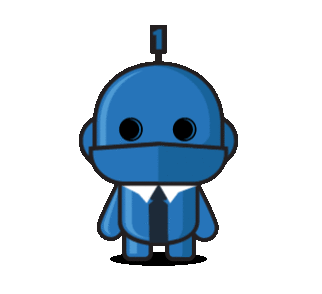

<router-outlet *ngIf="isAdmin"></router-outlet>
<div>
  
</div>
<mat-sidenav-container *ngIf="!isAdmin">
  <mat-sidenav #sideNav role='navigation'>
    <mat-nav-list>
      <app-side-nav [sideNavigation]='sideNav'></app-side-nav>
    </mat-nav-list>
  </mat-sidenav>
  <mat-sidenav-content>
    <app-header (toggleSideNav)='sideNav.toggle()'> </app-header>
    <div class="body">
      <router-outlet></router-outlet>
    </div>
    <app-footer></app-footer>
  </mat-sidenav-content>
</mat-sidenav-container>
